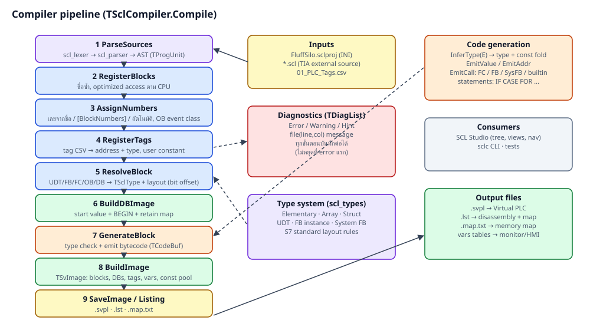
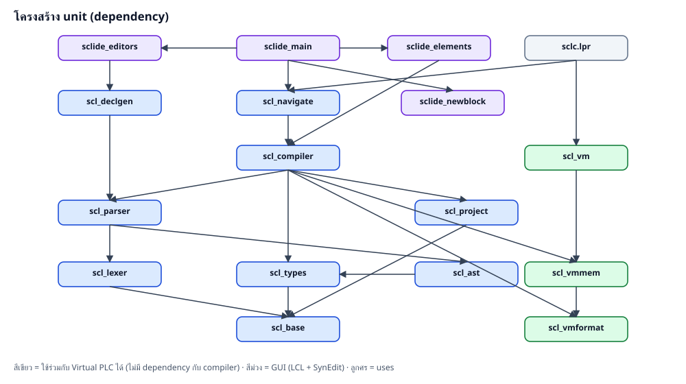

| ขั้น | method | รายละเอียด |
|---|---|---|
| 1 | ParseSources | อ่านทุกไฟล์ใน [Sources] (หรือ buffer จาก editor ผ่าน OnGetSource) → TSourceUnitList |
| 2 | RegisterBlocks | สร้าง TBlockInfo ต่อ block, ตรวจชื่อซ้ำ, optimized access ตาม CPU |
| 3 | AssignNumbers | เลข block จาก [BlockNumbers], ชื่อแบบ DB10/FC5, ชื่อ OB มาตรฐาน (Main=1, Startup=100), อัตโนมัติ; event class ของ OB |
| 4 | RegisterTags | tag CSV → address (MakeAddr) + type, ตรวจขนาด address/type, user constant |
| 5 | ResolveBlock | สร้าง TSclType ของ UDT/DB/FB instance/FC param/temp, layout, local symbol table (recursive พร้อมตรวจ cycle) |
| 6 | BuildDBImage | start value จาก declaration + BEGIN, retain map |
| 7 | GenerateBlock | type check + emit bytecode ต่อ block, line table, prologue สำหรับ String temp |
| 8 | BuildImage | รวมเป็น TSvImage: block table, DB, tags, vars table, constant pool |
| 9 | SaveImage / ListingText | เขียน .svpl, .lst (disassembly), .map.txt |

| Unit | บรรทัด | หน้าที่ |
|---|---|---|
| scl_base | 156 | TCpuFamily, TSrcPos, TDiag/TDiagList, ESclError |
| scl_types | 785 | TTypeKind, TSclType, TMember, layout S7, system FB types, TConstValue |
| scl_lexer | 668 | token, typed constant (T#, 16#, D#, TOD#...), address %, pragma {...}, comment |
| scl_ast | 643 | AST: declaration, expression, statement, TProgUnit |
| scl_parser | 1,424 | recursive descent parser + error recovery |
| scl_project | 351 | .sclproj (INI), tag CSV, block numbers |
| scl_compiler | 4,396 | semantic analysis, layout, DB image, code generation, image building, listing |
| scl_declgen | 354 | grid ⇄ source ของ interface, template block ใหม่ |
| scl_navigate | 345 | Find Declaration |
| scl_vmformat | 1,003 | opcode, TCodeBuf, TSvImage (อ่าน/เขียน .svpl), disassembler |
| scl_vmmem | 279 | encode/decode ค่าใน memory (big endian, BCD, S5TIME, DT, String) |
| scl_vm | 948 | reference Virtual PLC interpreter |
| sclc.lpr | 394 | CLI |
| sclide_main | 1,884 | หน้าต่างหลัก, menu, tree, compile, find declaration, recent, panels |
| sclide_editors | 1,007 | แท็บ editor: source, tags, interface grid, grid view, text |
| sclide_elements | 613 | panel SCL elements + drag & drop |
| sclide_newblock | 185 | dialog สร้าง block |
| ชนิด | อยู่ที่ | ความหมาย |
|---|---|---|
| TProgUnit | scl_ast | block 1 ตัวจาก source: header, sections, body, ตำแหน่งใน text |
| TBlockInfo | scl_compiler | ข้อมูลหลัง resolve: เลข, DataType, ParamType, TempType, Locals, Image, CodeIndex, Calls |
| TSclType / TMember | scl_types | ชนิดข้อมูลและ member พร้อม OffsetBits, Section, ByRef, Init |
| TLocalSym | scl_compiler | ชื่อใน block → (instance / frame / constant, offset, ByRef, DeclPos) |
| TExpr.RType/RefKind/RefOfs | scl_ast | ผลการวิเคราะห์ชนิดและการเข้าถึง (cache ใน node) |
| TCodeBuf | scl_vmformat | buffer bytecode + label/fixup |
| TSvImage / TSvBlock / TSvDataBlock | scl_vmformat | image ใน memory ก่อนเขียนไฟล์ / หลังอ่านไฟล์ |